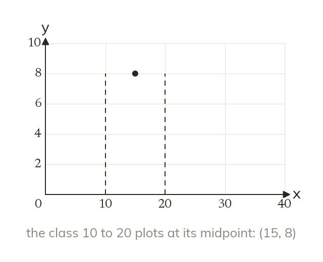

Class intervals and midpoints
Grouped data puts values into class intervals. Each interval plots at its midpoint, halfway between its endpoints. A frequency polygon joins those points with straight lines.
Grouped data collects values into class intervals, each with its own frequency; the midpoint of an interval is halfway between its two endpoints and stands in for every value in that class. A frequency polygon plots frequency against midpoint for each interval, then joins the plotted points with straight lines.